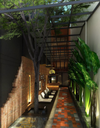

Resor · 2010-10-05 @ 11:10:44 Allmänt Permalink
NapPark@Khao San


B777-300 Betydligt mysigare plan, gott om plats och karta var vi är. Gillar sånt ju, hastighet, höjd, temperatur. Och att se spännande platsers namn när vi flyger över dem och tänka ”Dit vill jag ju också!” Reklam på TVn, 5 bilder i sekunden! Gränsar till subliminalt.
Övar på att försöka räkna ut när och var vi möter soluppgången, tror det blir kl.4 Istanbul-tid. Efter 5 timmars flygning. Givet klockan är 23 i Istanbul och flygresan tar 9 timmar. Klockan är 3 i Bangkok.
Till min glädje är min väska med! Och jag kommer ut i den fuktiga, underbara, tryckande värmen och den sötaktig doften av Thailand, liten lyckorush! Tackar duktigt nej till taxierbjudanden för 1100 THB och tar den utmärkta bussen direkt till Khao San för 150 där jag bokat på NapPark hotel. Duggregnar lite, mulet, känns skönt.
Rookie mistake igen: Tar Tuk-tuk, jag är ju lite hjälplös med all packning, orörlig, och det är trångt, ska kosta 20 THB till hotellet. Jag blir körd till fel hotel (rätt gata tack o lov) i en omväg runt stadsdelen och han vill ha 100, som jag i allafall får ner till 60. Lite kanske, men jag HAR ingen inkomst!
Hostel, verkar fint, lugnt, fräscht, jättetrevligt bemötande. Så där som jag skulle vilja ha det, våningssängar, 90cm sovalkover med ett låsbart skåp. Wi-Fi och strömuttag ☺
Karta, pass o pengar. Nu ska jag köpa kontantkort till mobilen.